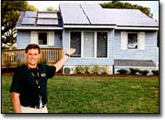

WARREN GRETZ/NREL
University of Missouri-Rolla and Rolla Technical Institute students designed this modest but highly energy-efficient solar home for the Solar Decathlon competition held last October in Washington, D.C. The student team from the University of Colorado at Boulder took first place with their BasePlus home. (For more information, visit:
www.eere.energy.gov/solar_decathlon/boulder.html.)